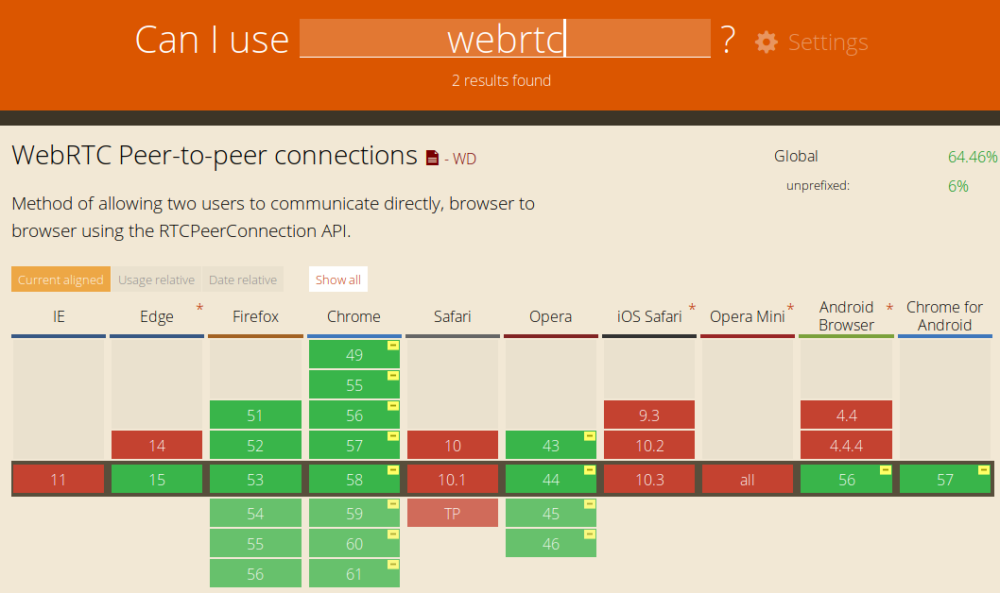
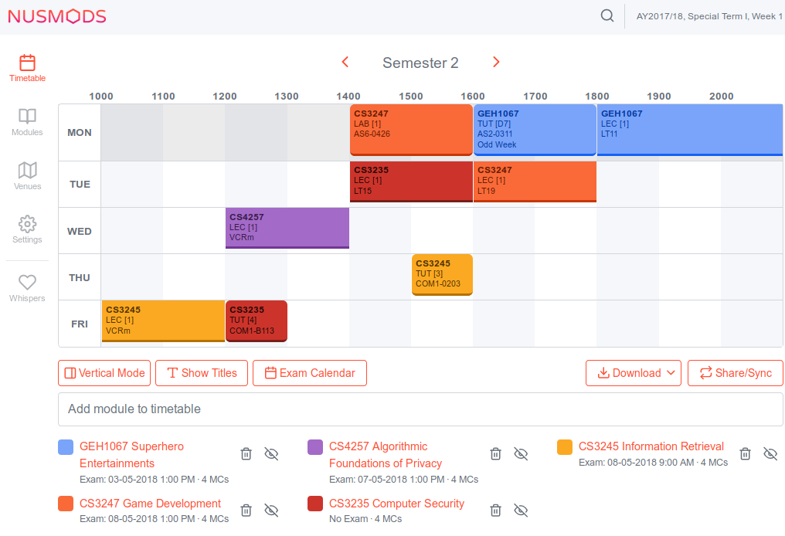

Choosing Your Project Type
Follow along at https://zhangyijiang.github.io/orbital-choose-project-talk/
Do your own research
I can't talk about everything
Discuss with your partner
But not too loudly
Ask questions!
Your friends, your mentor, or me (at the end of this talk)
I have an idea!
But now what?
What can I build?
Capabilities? Limitations?

Who Am I?
Zhang Yi Jiang
Survived CS3216 and CS3217
aka. Making cool shit - the module
10 years in web development
knows how to fix the double margin bug
Twilight Sparkle is best pony
duh
What is a...
platform?
framework?
API?
Platform
The hardware, software and ecosystem on which your project is built
Framework
The foundation for your app
app
├── Console
│ └── Commands
├── Events
├── Exceptions
├── Http
│ ├── Composers
│ ├── Controllers
│ │ └── Auth
│ ├── Middleware
│ └── Requests
├── Jobs
├── Listeners
├── Models
├── Policies
└── ProvidersProvides structure
Simplifies common tasks
API
aka. Application Programming Interface
Interact with third party services
Walk the social graph
Show maps and directions
Display cats as HTTP status code
Every project is different
So what is right for me?
- Web app
- Mobile
- Game
- Browser extension
- Chatbot
- Desktop
- ...and anything else you can imagine
Rank your priorities
Evaluate the project types
Reach and accessibility
Who can access or use your project, and is it easy to do so?
Educational
What do you learn from building the project?
Development experience
Is it fun or easy to build? Is it expensive?
Competitors
What do existing apps use?
Why did they choose it, and should you try to differentiate?
Monetization
Can you make money?
Web Apps
How websites work
Frontend
HTML/CSS/JavaScript
Static website
Backend
PHP, Ruby, Python, JavaScript...
Web Applications
Single Page Application
Pros
Reach - Easily cross platform
Pros
Accessible - No installation required
Pros
Easy to learn - start simple, learn as you go along
Pros
Easy to develop - No compilation, wide choice of languages
Cons
No direct hardware access - weaker API, poor performance
Cons
Weaker and inconsistent API
Cons
(Relatively) poor performance
Cons
Non-native UI
Cons
Fast changing - short knowledge lifespan
Examples!
of things which you might not think was possible with web apps
Image compression! (Sort of)
Augmented reality!
Module planning!
Console emulation!
| Pros | Cons |
|---|---|
|
|
Resources
Mobile Apps
Native
Android + Java
iOS + Swift
Cross Platform
Xamarin + C#
React Native + JavaScript
- Games
- Performance sensitive
- Require native APIs
Pros
Native Platform
Pros
Native Platform - Native UI and API
Pros
Native Platform - Hardware access
Pros
Native Platform - Performance
Pros
Developer Experience - Better tooling, more mature
Cons
Developer Experience - Steep learning curve
let cannonFiringRangeGradient: CGGradient = {
let colors = [UIColor.white.withAlphaComponent(0.3).cgColor,
UIColor.white.withAlphaComponent(0).cgColor]
return CGGradient(colorsSpace: nil, colors: colors as CFArray, locations: nil)!
}()
let center = CGPoint(x: firingRange.bounds.width / 2, y: firingRange.bounds.height)
let radius = firingRange.bounds.height
firingRange.image = {
let renderer = UIGraphicsImageRenderer(size: firingRange.bounds.size)
return renderer.image { rendererContext in
let context = rendererContext.cgContext
let gradient = Constants.UI.cannonFiringRangeGradient
context.drawRadialGradient(gradient,
startCenter: center, startRadius: 0,
endCenter: center, endRadius: radius,
options: [])
}
}()HTML
<div class="cannon-range-bg">CSS
.cannon-range-bg {
background: radial-gradient(circle 100px,
rgba(255, 255, 255, 0),
rgba(255, 255, 255, 1));
}Cons
Developer Experience - Compiled languages
Other project types
Quick fire round
Games
- Any platform
- Native app or Unity
- For experienced developers
- (Unless you're making something simple or unconventional)
Mission Control #2
Game Development Group - 20/5
Browser extensions
- Lives in the browsers
- Privileged access to browser
- Use WebExtension API, HTML + CSS + JS
- Can be part of bigger project
Chatbot
Desktop Applications
- AppKit + Swift
- WPF + C#
- Election + JavaScript
- Qt + C++
Looks familiar?
- Pro: Similar to mobile apps
- Con: Similar to mobile apps
Closing thoughts
Consider carefully
These choices will affect your entire Orbital projectBut choose quickly
Making a decision is more important than